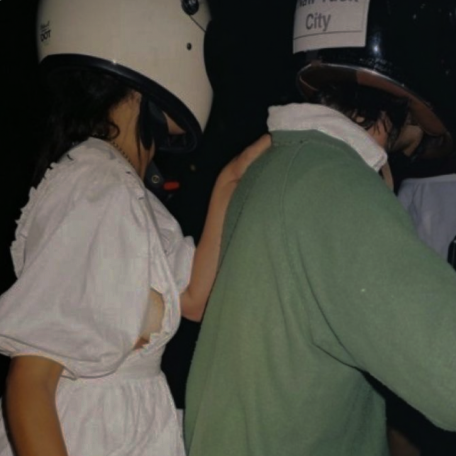

You pay per setup, not per month
because we want to actually set you up on dates.
because we want to actually set you up on dates.
because we want to
actually set you up on dates
actually set you up on dates
You meet people
you really want.

you really want.
We show you the best people first, because we want you to use setups. No paywall or roses.
You don't waste
time swiping.
time swiping.
We show you 3-5 curated profiles a week, instead of 80-100 profiles a day.
and, you don't
get ghosted.
get ghosted.
Because you both said yes to being introduced (and paid for it), you actually go on the date.
*A setup is when you both say yes, and the matchmaker introduces you on a group chat.
At Sitch, we know how to connect people who share common interests using a seamless blend of humans and
AI.
At Sitch, we know how to connect people who share common interests using a seamless blend of humans and
AI.
At Sitch, we know how to connect people who share common interests using a seamless blend of humans and
AI.
At Sitch, we know how to connect people who share common interests using a seamless blend of humans and
AI.
At Sitch, we know how to connect people who share common interests using a seamless blend of humans and
AI.